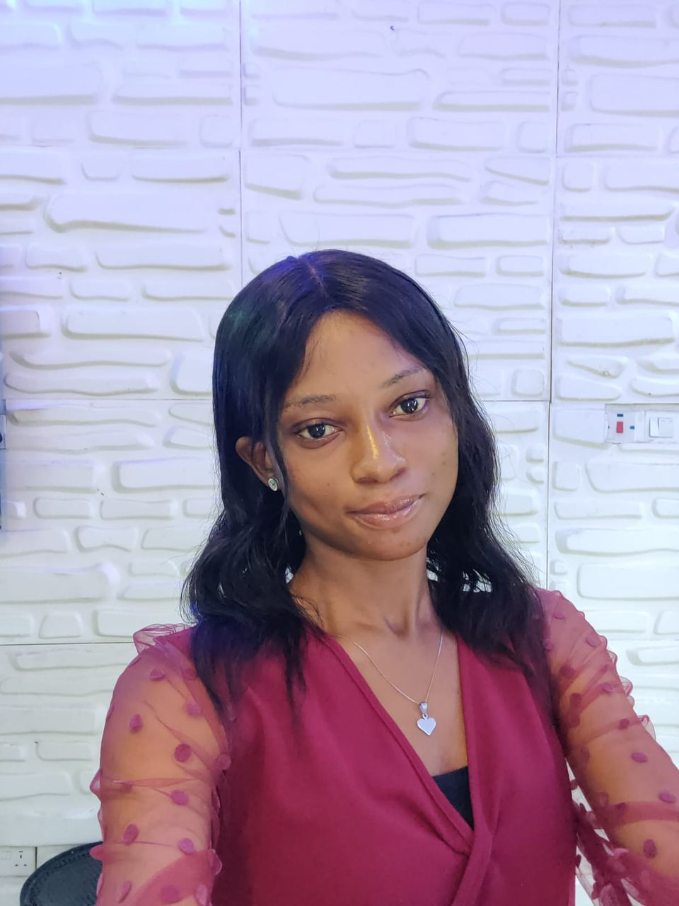

About
Hello! My name is Yetunde Sylvester-Morka, and I'm an aspiring software engineer passionate about turning ideas into functional interactive websites. My journey into tech started with a curiosity about how websites are built, and now, I'm actively learning HTML, CSS, JavaScript, Github and hosting and deployment.
I love solving problems, paying attention to details, and continuously improving my skills. My long-term goal is to grow into a competent full-stack developer for any kind of software engineering jobs, contribute to meaningful projects, and build solutions that impact life positively.
When I'm not coding, I enjoy learning new things, being creative, and sharing knowledge with others.

Blog
My First Week in Software Engineering: What I learned.
Starting something new can feel both exciting and overwhelming. When I began my journey into software engineering, my focus was on the basics of HTML and CSS, and while it wasn't smooth, it was a huge step forward for me.
Here are the few things that I learned and some challenges that I faced::
- Getting comfortable with HTML
I discovered that HTML is the backbone of every webpage. I learned how to:
- Structure a web page using (html), (head), and (body) tag/element.
- Add headings, paragraphs and lists.
- Create links that connect one page to another.
One small win for me was linking a sign-up page and a login page together. It felt great to see those pages connected.
- Introduction to CSS
CSS was a bit more challenging at first, but it's also the fun part. I learned how to:
- Change text colors and background color.
- Style buttons with hover effects.
- Add borders and make them rounded with border-radius.
At first, I struggled to get my hover effect to work, but after some research and practice, I figured it out. That moment gave me a lot of confidence.
What I learned From Deploying My First Project
Deploying my first project was very easy and exciting! I learned how to push code to GitHub and connect it to Vercel to make my site live. It showed me how important version control is, and how little steps add up to big progress in coding.
Initializing an empty repository using "git init" became one of the most exciting things for me to do. I learned how version control helps you save, track and manage changes to your work overtime. I also learned that without configuring your identity using "git config", you will not be abe to push your projects to GitHub.
Lastly, I learned how important it is to link local and remote repositories using "git remote add origin URL", as without linking them, it is impossible to push your projects to GitHub.
CSS Tips For Beginners
CSS might look tricky at first, but breaking it down into sections like colors, fonts, and layouts, makes it manageable. I initially struggled with using some selectors like pseudo-selectors the right way, struggled with variables, struggled with CSS Flexbox and Grid, and I also struggled with using Media Queries the right way.
My biggest tip? Practice daily, and don't be afraid to experiment with styles. That was what helped me.

.png)
.png)
.png)
.png)